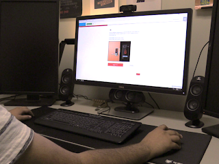
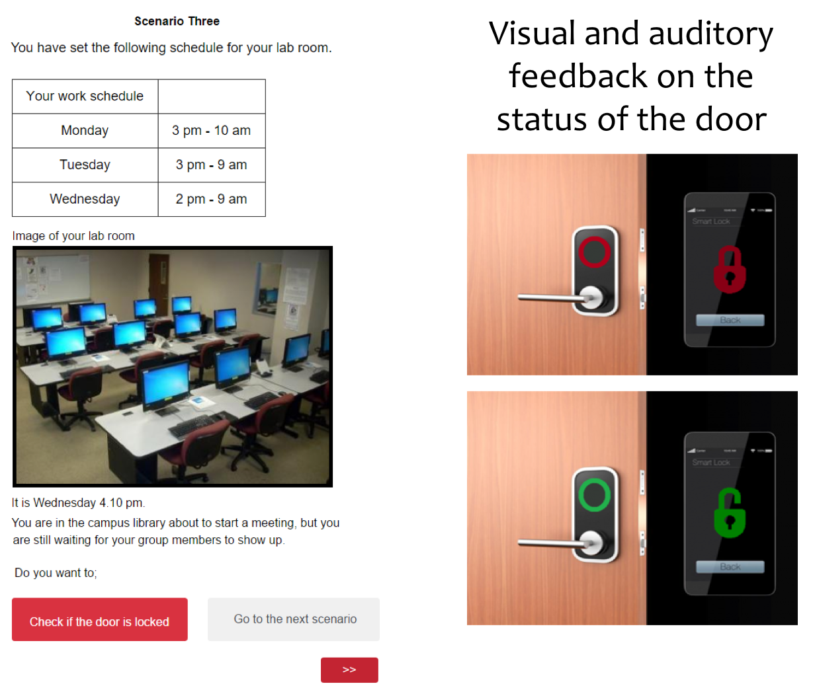

Demystifying technology, one bit at the time
Do simulated home automation device features (Male/Female voice and Home/Work context) influence user perceived (Explicit and Implicit) trust?
Home automation technologies claim comfort, efficiency, and security to their users in return for their personal data. Trust plays a major role in stabilizing this capricious relationship between privacy and convenience, but designing for appropriate amounts of trust is tricky business. Sometimes, features which appear trivial to developers may actually drive users’ purchasing behavior. An example of a feature that was moving towards standardization but turns out to be a differentiating selling point is the gender of the device’s voice. Many voice assistants use a female, humanoid voice, but why? And does it matter?
Similarly, acceptance of work automation does not necessarily translate to accepting automation in the more personal context of one’s home.
A home automation simulation was created in which users were responsible over a remote controlled smart lock system that could lock or unlock the front door based on a user provided schedule. This schedule was standardized and provided by the researchers. Participants were asked to set the schedule and then to through 5 hypothetical scenearios in which they could either check the system if it was correct or continue to the next scenario.
The 2 Gender (Male/Female) x 2 Context (Home/Office) factorial design resulted in 4 conditions. 20 university students from IT majors were assigned to one of the four conditions, and then counter-balanced for the second condition to ensure an equal number of participants in each condition.
The gender of the system was controlled through pre-recorded machine-generated US English voice feedback in the simulation, which was either more masculine for the male version and more feminine one for the female version. In all cases, the system’s name was kept constant as the gender-neutral ‘Riley’.
Location was influenced by asking the students to imagine themselves as either a graduate student working in a computer lab for the office version, or living on a campus dorm for the home version. These situations were accompanied by an image depicting the situation, which were chosen to be relatively close to their actual lives so that the simulation wouldn’t be too much of a stretch.
To conclude, a semi-structured interview was conducted to provide additional insight into the participants' reasoning during the experiment.
 Preliminary findings reveal that although participants did not indicate different levels of trust towards each system, participants checked the system less often (i.e. trusted the system more) when the conditions were in line with current expectations (Female-Home and Male-Office conditions) and more often when their stereotypical expectations were violated (Male-Home and Female-Work conditions).
Explicit trust was measured by retrospectively asking the participants how much they trusted each of the two systems on a 5-point Likert type scale and by counting the number of times they chose to check the system.
The reported trust towards the system did not significantly differ between the systems. This is expected because the system was functionally the same in all conditions. It is possible that some participants caught on to the purpose of the study during the experiment, but the interviews revealed this not to be the case as many participants were more concerned with the security and functionality of the system.
By themselves Gender and Context did not have a significant main effect on the number of times participants checked the system. Surprisingly, a significant interaction effect of Gender and Context was found in the sense that participants checked the system more often when they were in a condition in which the Gender and Context created a Stereotype incongruent situation (Male-Home and Female-Work conditions).